Geführte Schritte, einzeln bearbeitbare Dokumente und fest erreichbare Aktionen. Die Aufnahmen zeigen die implementierte Anwendung mit synthetischen Testdaten in WebKit.
Lokaler Arbeitsstand vom 9. September 2026. Hinweise und Checklisten lassen sich auf den Dokumentseiten aufklappen; jedes Dokument öffnet seinen eigenen Bearbeitungsablauf. Die Bilder können zur Detailansicht geöffnet werden.
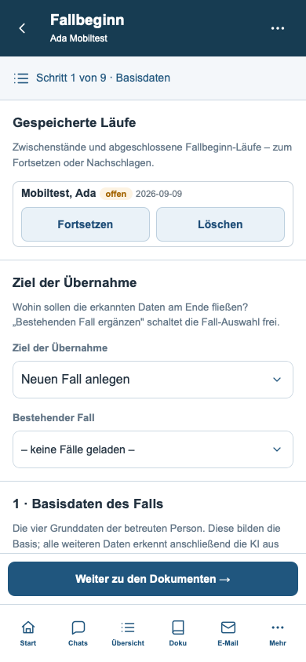
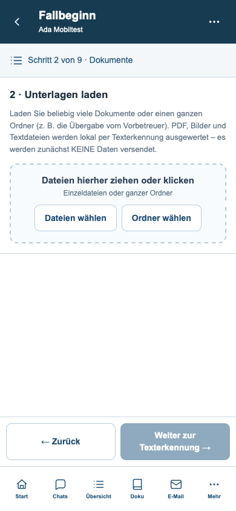
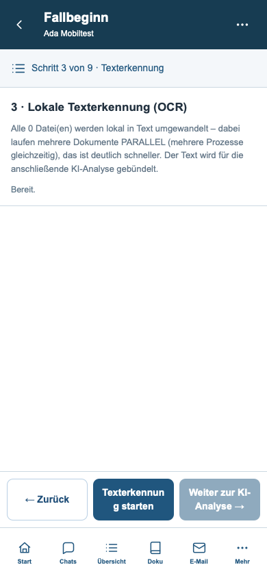
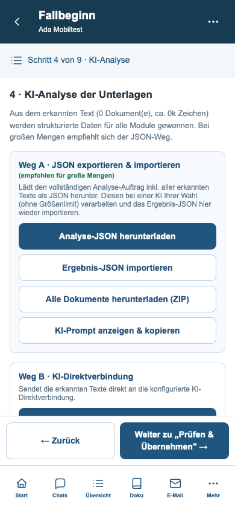
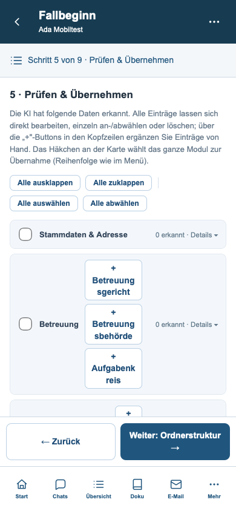
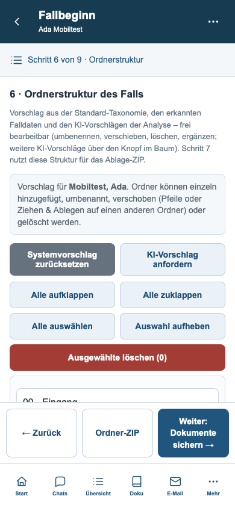
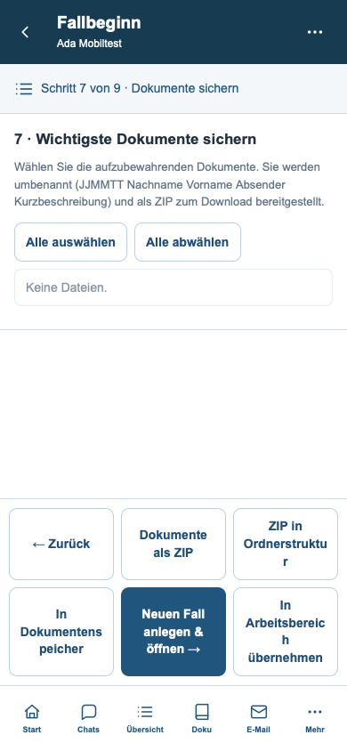
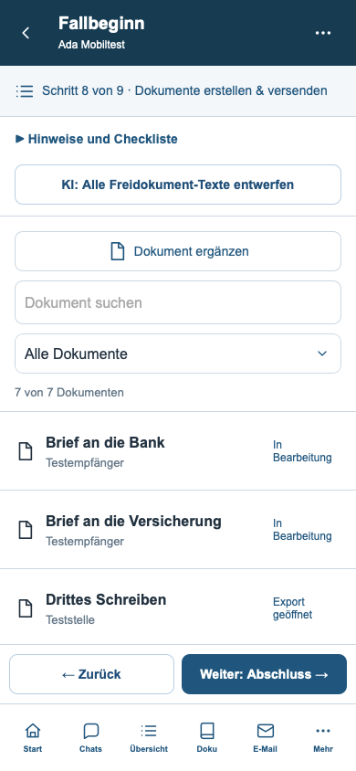
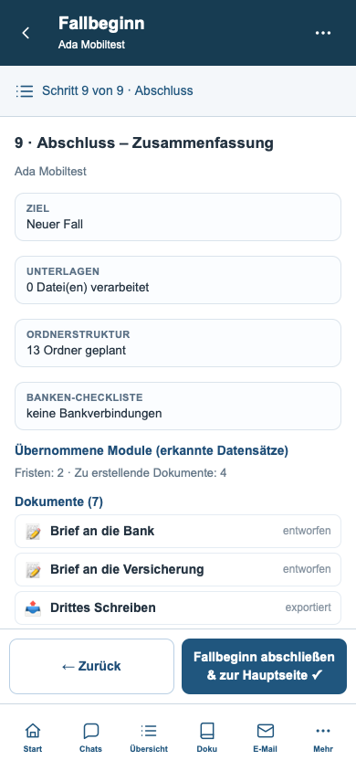
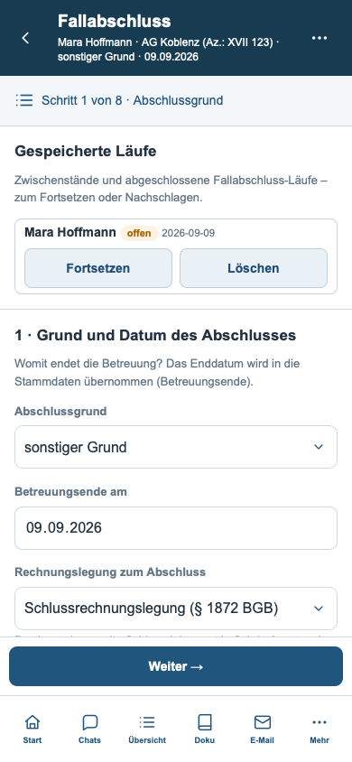
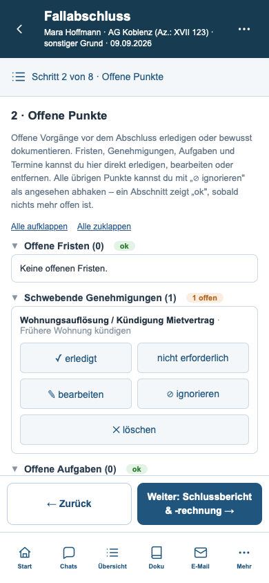
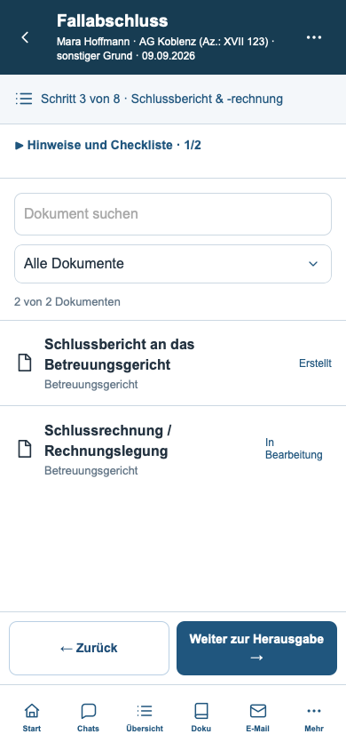
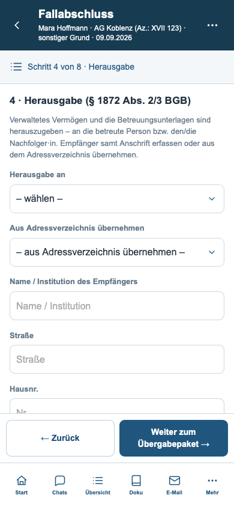
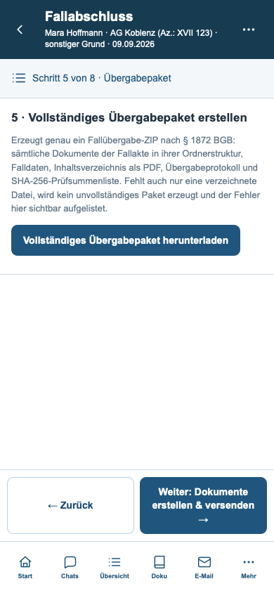
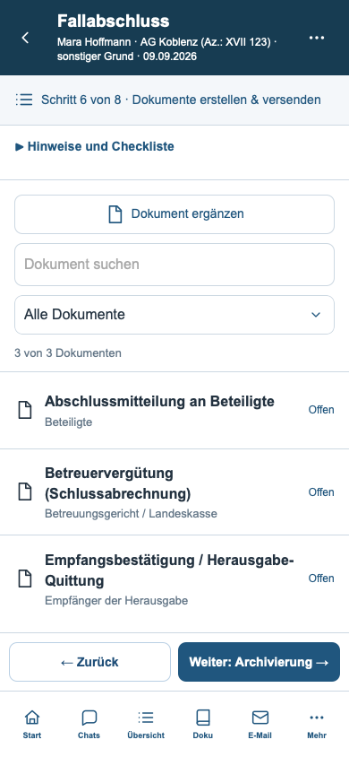
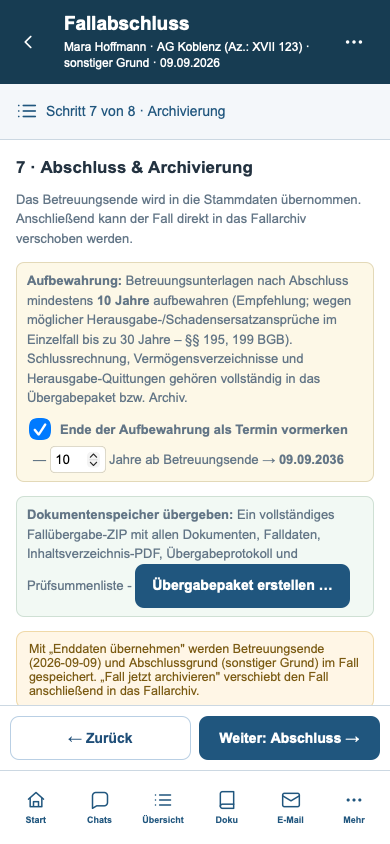
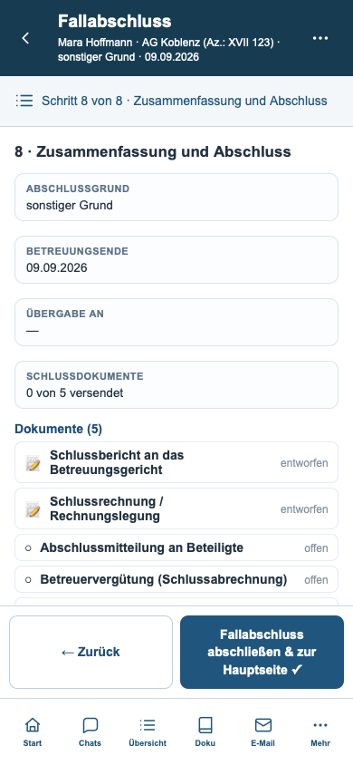
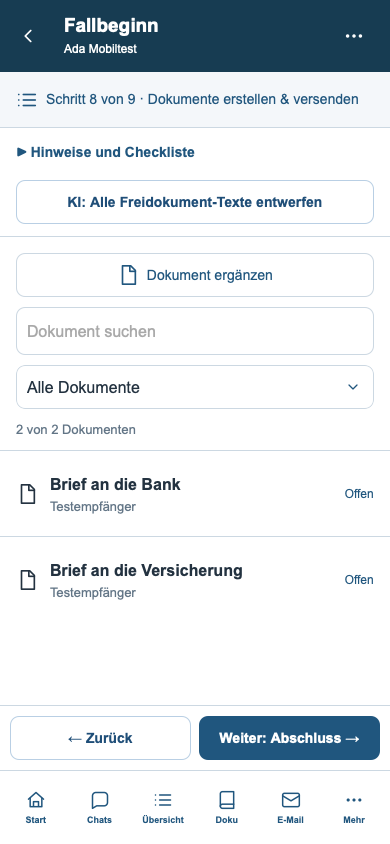
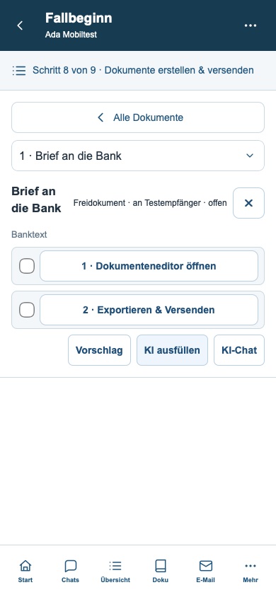
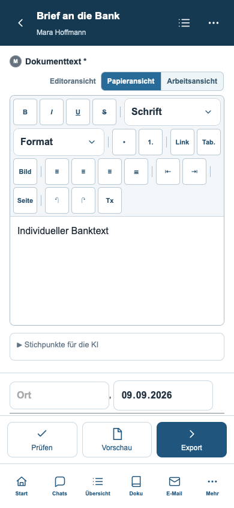
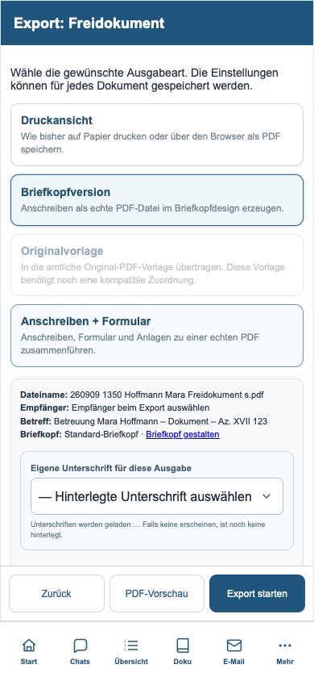
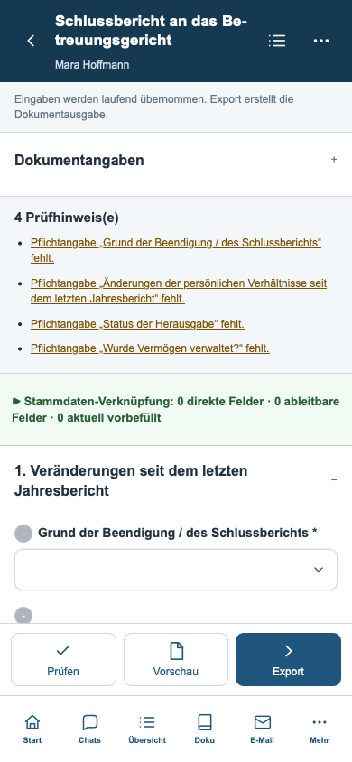
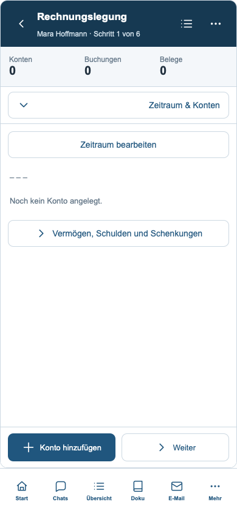
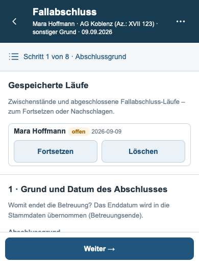
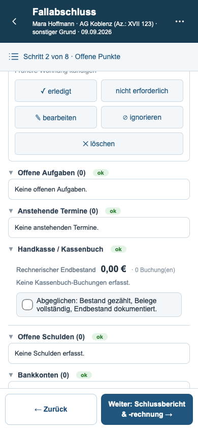
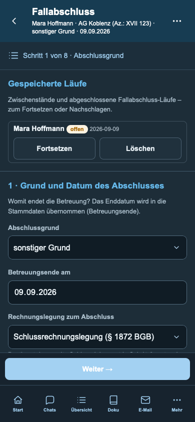
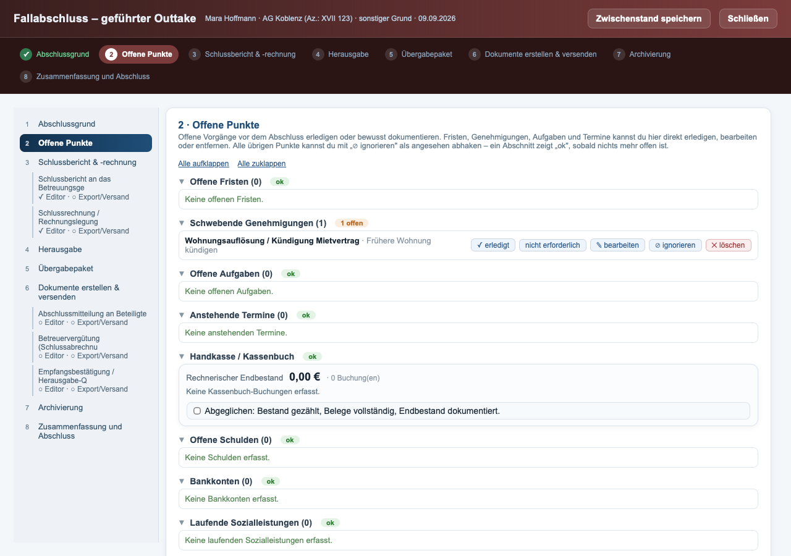